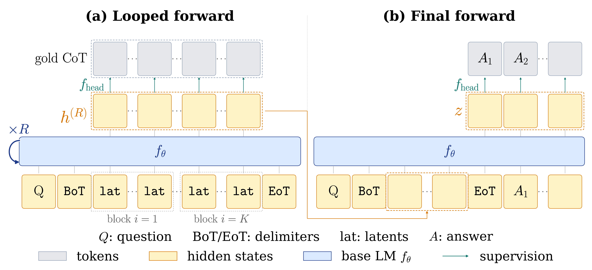
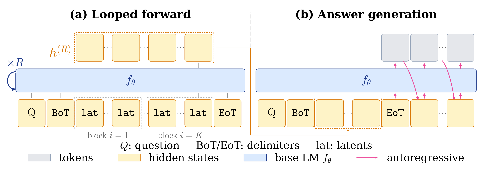
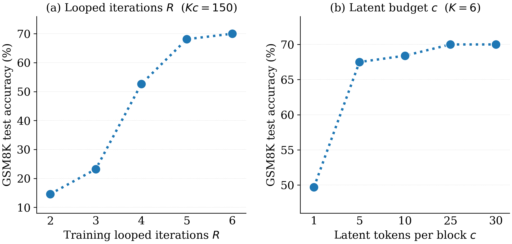
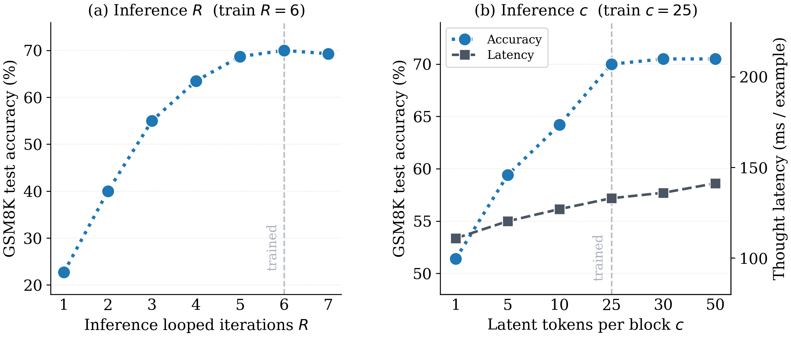
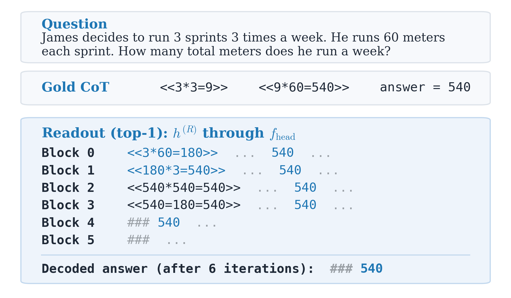

Looped Transformers are more than parameter-efficient recurrent-depth models. They provide a practical architecture for iterative reasoning over a parallel workspace and can be trained with surprisingly simple supervision, just plain cross-entropy loss. We instantiate this as LOTUS (Looped Transformers with parallel supervision on latents). It is the first latent method to match explicit CoT at the 3B scale on GSM8K while thinking 2.5×–6.9× faster, with latents that decode back into readable reasoning.
LOTUS inserts $K$ latent blocks (each with $c$ tokens) between the question and answer, then loops the base model over them $R$ times to get the post-loop latents. Every block is refined in parallel within each iteration, so the thought phase no longer scales with the number of decoded reasoning tokens. After the loop, every latent block is supervised in parallel, each aligned to its matching CoT step. The answer is then supervised with standard next-token prediction conditioned on the post-loop latents.

At inference, we run the same looped forward, now without any losses, and then decode the answer. The question's KV cache is computed once, the loop iterates $R$ times to fill the $K$ latent blocks, and the answer is decoded autoregressively from those post-loop latents through the base LM head. All the reasoning is carried by the parallel latent blocks, so the only sequential decoding is the short answer suffix, the source of LOTUS's latency gains.

On Llama-3.2-3B-Instruct, LOTUS is the only latent method that stays with explicit chain-of-thought, on compact math-expression reasoning and longer natural-language reasoning, while thinking 2.5×–6.9× faster than CoT.
| Method | GSM8K | GSM-Hard | SVAMP |
|---|---|---|---|
| Explicit CoT | 71.5 | 17.0 | 71.0 |
| PCCoT | 54.7 | 13.5 | 69.5 |
| CODI | 60.8 | 14.3 | 73.3 |
| CODI + SIM-CoT | 62.3 | 14.6 | 74.9 |
| KaVa | 65.7 | 15.2 | 72.7 |
| LOTUS | 70.0 | 16.0 | 75.7 |
| Method | Thought (ms/example) |
|---|---|
| Explicit CoT | 338.8 (1.0×) |
| LOTUS | 133.0 (2.5×) |
| Method | GSM8K | GSM-Hard | SVAMP |
|---|---|---|---|
| Explicit CoT | 68.41±0.59 | 18.27±0.85 | 71.93±1.62 |
| PCCoT | 47.6 | 11.0 | 65.2 |
| CODI | 55.9 | 13.6 | 70.1 |
| KaVa | 60.0 | 14.8 | 66.1 |
| LOTUS | 68.13±0.77 | 16.27±0.19 | 73.40±0.35 |
| Method | Thought (ms/example) |
|---|---|
| Explicit CoT | 963.6 (1.0×) |
| LOTUS | 140.8 (6.9×) |
LOTUS needs enough of both axes of its latent budget, sequential loop depth ($R$) and parallel width per block ($c$), and parallel supervision through the base LM head is equally essential. Accuracy climbs with each axis and saturates around $R=6$, $c=25$. We keep the number of latent blocks $K$ fixed.

The same budget can also be dialed at inference without retraining: accuracy degrades gracefully below the trained setting and plateaus above it, so test-time compute can be traded for accuracy.

LOTUS's latent space isn't a black box. Projecting the post-loop hidden states through the base model's own LM head decodes each latent block into human-readable reasoning, recovering the gold CoT steps, and even surfacing alternative valid intermediate computations never seen at training time. This is direct evidence that the latent representation is interpretable and CoT-aligned.

### 540) after 6 iterations.
For more details and additional interesting results, check out the paper. If you find it useful, please cite:
@article{fan2026bridging,
title={Bridging the Gap Between Latent and Explicit Reasoning with Looped Transformers},
author={Fan, Ying and Svete, Anej and Lee, Kangwook},
journal={arXiv preprint arXiv:2606.31779},
year={2026}
}